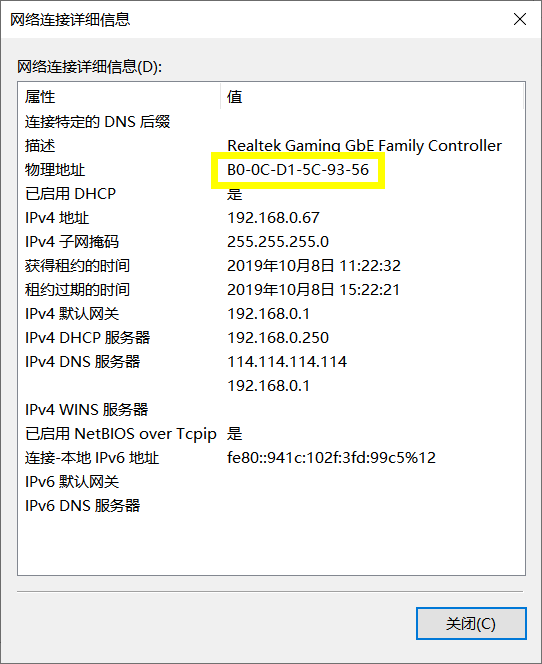

数据链路层
数据链路层(Data Link Layer)是OSI模型的第二层，负责建立和管理节点间的链路。
在计算机网络中由于各种干扰的存在，物理链路是不可靠的（物理层的线路有传输介质与通信设备组成，比特流在传输介质上传输时一定会存在误差，）。因此，数据链路层的主要功能是在物理层提供的比特流的基础上，通过差错控制、流量控制方法，使有差错的物理线路变为无差错的数据链路，即提供可靠的通过物理介质传输数据的方法。
数据链路层的功能
- 链路管理：负责数据链路的建立、维持和释放，主要用于面向连接服务。
- 帧包装、帧传输、帧同步：接收方确定收到的比特流中一帧的开始位置和结束位置
- 帧的差错恢复：用于使接收方确定收到的数据就是由发送方发送的数据。
- 流量控制：发送端发送数据超过物理线路的传输能力或者超出接收端的帧接受能力时，就会发生链路阻塞。流量控制就是为了防止出现链路阻塞
- 透明传输：不论数据是什么样的比特组合，都应当能够在链路上进行传输
数据链路层基础知识
以太网：Ethernet
MAC地址
MAC（Medium/Media Access Control）地址用来表示互联网上每一个站点的标识符，采用十六进制数表示，共6个字节,通常表示为12个16进制数。其中，前3个字节是由IEEE的注册管理机构RA负责给不同厂家分配的代码，也称为“编制上唯一的标识符”，后3个字节由各厂家自行指派给生产的适配器接口，称为扩展标识符。每台主机的网卡上都有一个MAC地址，可在命令行输入“ipconfig/all”查看本机设备的MAC地址。
win查看mac地址

cmd 命令行
1
C:\Users\HP>ipconfig /all
广播包的目的mac地址ffffffffffff（一共12个f）
数据帧（Data Frame）
所谓数据帧，就是数据链路层的协议数据单元，它包括三部分：帧头，数据部分，帧尾。其中，帧头和帧尾包含一些必要的控制信息，比如同步信息、地址信息、差错控制信息等；数据部分则包含网络层传下来的数据，比如IP数据包
数据帧的格式
- 帧的组成元素：
- 目的地址
- 源地址：
- 类型：
- 数据校验序列：校验作用
- 数据MTU：指的是一种通信协议的某一层上面能通过的最大数据包大小（以字节为单位）
- 帧的组成元素：
数据帧的大小：
- 64-1518字节
数据帧得到格式谁能看懂？
- 交换机
- 电脑
- 路由器
- 遵循TCP/IP协议的都能看懂
虚拟局域网：VLAN
定义
- VLAN（Virtual Local Area Network）即虚拟局域网，是将一个物理的LAN在逻辑上划分成多个广播域的通信技术。VLAN内的主机间可以直接通信，而VLAN间不能直接通信，从而将广播报文限制在一个VLAN内。
作用
- 限制广播域：广播域被限制在一个VLAN内，节省了带宽，提高了网络处理能力。
- 增强局域网的安全性：不同VLAN内的报文在传输时是相互隔离的，即一个VLAN内的用户不能和其它VLAN内的用户直接通信。
- 提高了网络的健壮性：故障被限制在一个VLAN内，本VLAN内的故障不会影响其他VLAN的正常工作。
- 灵活构建虚拟工作组：用VLAN可以划分不同的用户到不同的工作组，同一工作组的用户也不必局限于某一固定的物理范围，网络构建和维护更方便灵活。
VLAN的种类
基于端口划分：这种方法明确指定各端口属于哪个VLAN。
- 优点: 操作简单。
- 缺点：主机较多时，重复工作量大；主机端口变动的时候，需要同时改变该端口所属的VLAN。
基于MAC地址的划分：根据主机网卡的MAC地址进行划分（每个网卡都有世界上唯一的MAC地址）。通过检查并记录端口所连接的网卡的MAC地址来决定端口所属的VALN。
- 优点：当用户主机物理地址改变的时候，不需要重新配置VLAN。
- 缺点：初始化的时候需要对所有用户进行配置，当主机数很大时工作量较大；由于交换机每个端口可能需要保存多个主机的MAC地址，从而降低了交换机的执行效率。
基于网络协议的划分：基于所用的网络层协议划分VLAN，可以划分为IP/IPX/DECnet/AppleTalk/Banyan等VLAN网络。这种按照网络层协议划分的方式可以使广播域跨越多个交换机，对希望针对应用和服务来组织用户的网络管理员具有很大的吸引力。
- 优点：用户主机物理位置改变后，不需要重新配置所属的VLAN网络；适用于需要针对不同应用和服务来组织用户的场景。
- 缺点：检查每一个数据包的网络层地址需要消耗处理时间，效率较低。
基于IP地址划分：将任何属于同一IP广播组的主机认为属于同一VLAN。
- 优点：良好的灵活性和可扩展性，可以方便的通过路由器扩展网络。
- 缺点：不适合局域网，效率不高。
基于策略的划分：一种根据不同的情况，将多种（上面提到的）划分VLAN的技术按照一定的安全策略进行综合运用的划分技术。
- 优点：这种方式具有自动配置的能力，自动化程度高；可以非常方便的扩展网络规模。
- 缺点：对设备要求较高。
注：
- 不同VLAN之间的通讯必须依靠路由器或者三层交换机来实现。
- 默认情况下，交换机所有的接口都属于VLAN1
- 不同厂家使用的命令是不一样的
- 交换机里有一个vlan 表，记录哪些接口属于哪个vlan，转发数据的时候先查看vlan，然后再帮助转发到相同的vlan接口上
- 一个vlan一个网段。不同vlan的电脑，就算ip地址属于同一个网段也是不能通信的
Trunk:实现不同交换机之间相同vlan的通信
- 交换机会给往其他交换机的数据帧打上VLAN标识，离开交换机标记就没了
- Trunk的模式
- 接入（Access）
- 干道(Trunk)
- 动态企望(Dynamic desirable)
- 动态自动(Dynamic auto)
- 非协商(Nonegotiate)
- vlan和trunk –》两个是成对出现的，黄金搭档
数据链路层设备
交换机
交换机学习的是源mac地址
物理编址、网络拓扑结构、错误校验、帧序列以及流控 , 目前交换机还具备了一些新的功能，如对 VLAN （虚拟局域网）的支持、对链路汇聚的支持，甚至有的还具有防火墙的功能 。
作用
是一种用于电信号转发的网络设备，可以把要传输的信息送到符合要求的设备上
1
“交换机内部的CPU会在每个端口成功连接时，通过将MAC地址和端口对应，形成一张MAC表。在今后的通讯中，发往该MAC地址的数据包将仅送往其对应的端口，而不是所有的端口。” —— 百度百科
交换机的转发原理
- 源MAC地址学习
- 看来的数据帧里的源mac地址是否在mac地址表里有
- 转发数据
- 查看mac地址表，如果有直接转发，如果没有则广播（往剩下的接口转发）
- 接收方回应
- 交换机实现单播通信
- 源MAC地址学习
MAC地址表
- mac地址和对应的接口编号
- MAC地址表示存放在内存当中的，一停电就一无所有
交换机以太网接口的模式
- 单工
- 半双工
- 全双工
交换机与集成器的区别 。
交换机 (Switch) 是一种基于 MAC （网卡的硬件地址）识别，能完成封装转发数据包功能的网络设备。交换机可以“学习” MAC 地址，并把其存放在内部地址表中，通过在数据帧的始发者和目标接收者之间建立临时的交换路径，使数据帧直接由源地址到达目的地址。现在的交换机分为：二层交换机，三层交换机或是更高层的交换机。三层交换机同样可以有路由的功能，而且比低端路由器的转发速率更快。它的主要特点是：一次路由，多次转发。
集线器 (HUB) 是计算机网络中连接多个计算机或其他设备的连接设备，是对网络进行集中管理的最小单元。英文 Hub 就是中心的意思，像树的主干一样，它是各分支的汇集点。 HUB 是一个共享设备，主要提供信号放大和中转的功能，它把一个端口接收的所有信号向所有端口分发出去。一些集线器在分发之前将弱信号加强后重新发出，一些集线器则排列信号的时序以提供所有端口间的同步数据通信。
网桥
作用：是实现局域网互连的存储转发设备。网桥从一个局域网接收MAC帧，拆封、校对、校验之后，按另一个局域网的格式重新组装，发往它的物理层。
1
“网桥像一个聪明的中继器，它将两个相似的网络连接起来，并对网络数据的流通进行管理，不但能扩展网络的距离或范围，而且可提高网络的性能、可靠性和安全性”